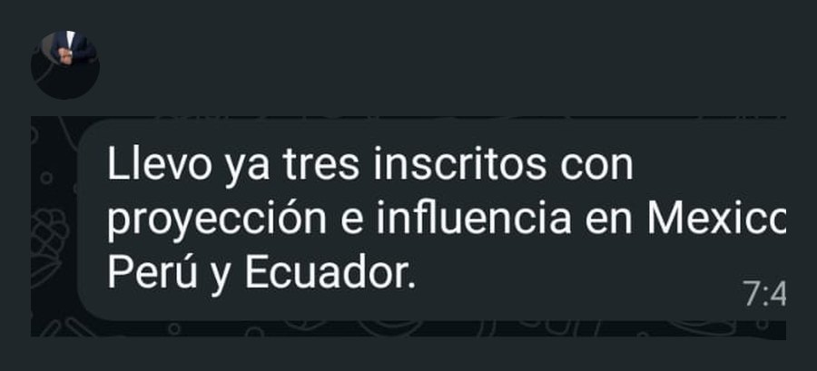
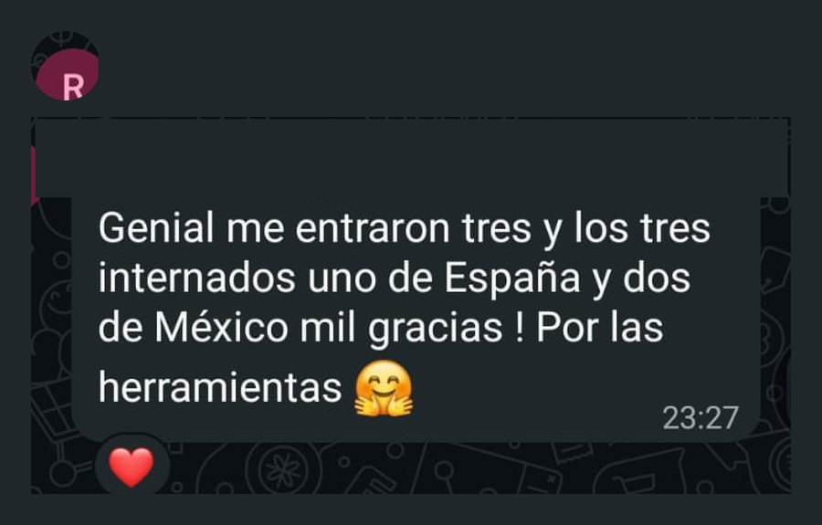
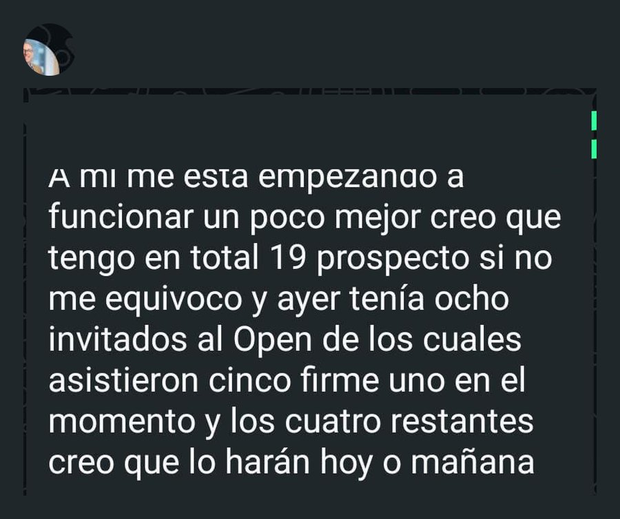
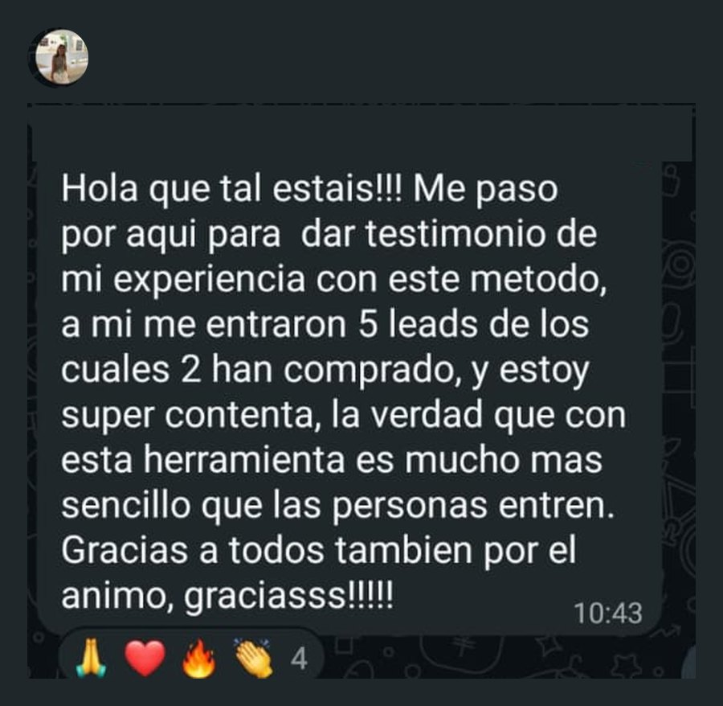
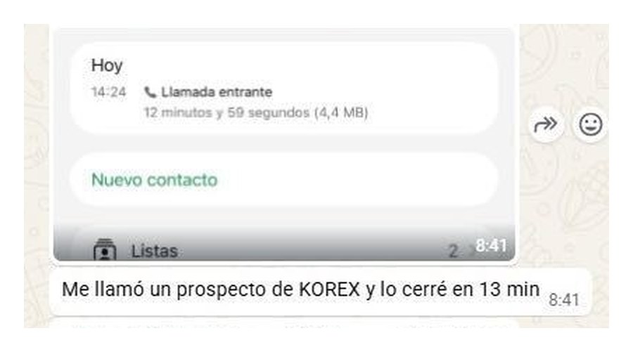
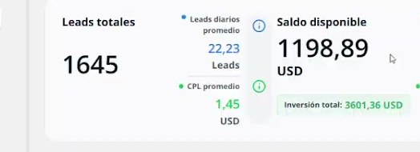
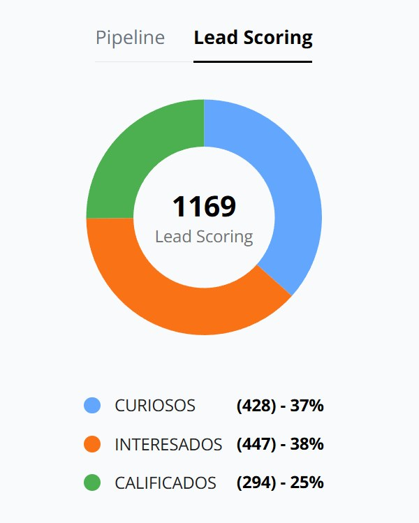

Esto es lo que dicen
los que ya lo están usando.
Sin guion y sin edición: capturas tal como llegaron y clientes hablando a cámara.
Jonathan, equipo Summit. Su caso, contado por él.
Sus networkers. Los que usan el sistema todos los días.
MÉTODO KOREXTestimonios · 02






MÉTODO KOREXTestimonios · 03




MÉTODO KOREXLos números · 04
Lo que registra el CRM
Y esto es lo que muestra
Y esto es lo que muestra
el sistema por dentro.

Una cuenta real: 1.645 leads, 22,23 por día y un coste por lead de 1,45 USD.

De 1.169 leads clasificados, 1 de cada 4 llega calificado.
Capturas del panel, sin retocarMÉTODO KOREX